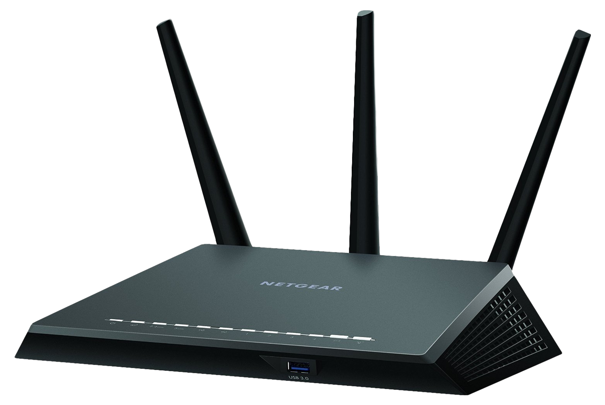

Modems means "modulator demodulator" and is designed to convert a computers digital signal for transmission over an existing telephone line.
Hubs are hardware devices that can have multiple of devices or computers connected to it. Most commonly they are used to connect together a number of devices to for a LAN.
Switches are similar hubs however are more efficient in the way that they distribute data packets. The switch checks the data packet receided and work out its destination address. It sends the data to the appropriate computers only. Each device on a network has a media access control (MAC) address that addresses it.
Bridges are devices that connect one LAN to another LAN that uses the same communication rules. They are often used to connect together different parts of a LAN so that they can funtion as a single LAN
Routers enable data packets to be routed between the different networks, for example to join a LAN to a area network(WAN). A rounter would have an interent cable pplugged into it and several cables connecting to computer and other devices on the LAN.
